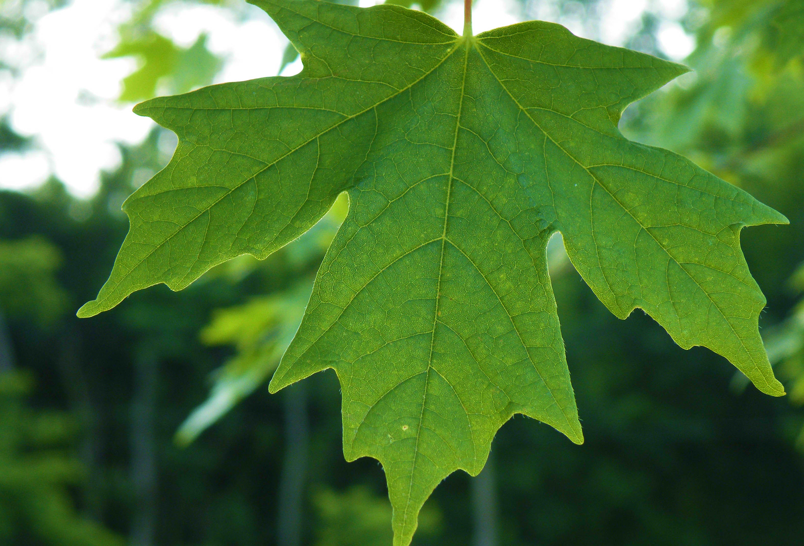

<!--
  This template loads for the 'tab.friend-detail' state (app.js)
  'friend' is a $scope variable created in the FriendsCtrl controller (controllers.js)
  The FriendsCtrl pulls data from the Friends service (service.js)
  The Friends service returns an array of friend data
-->
<ion-view view-title="Identify a leaf">
  <ion-nav-bar class="bar-balanced">
    <ion-nav-buttons side="left">
        <a class="button button-clear" href="#/prompt">
          <i class="big-icon ion-chevron-left"></i>
        </a>
    </ion-nav-buttons>
  </ion-nav-bar>

  <div class="fixed-header my-picture">
    <center>
      
    </center>
  </div>
<ion-content class="ion-content-below-my-picture">
    <br>
    <center><h4>What matches your leaf?</h4></center>

  <ion-card>
    
  </ion-card>

  </ion-content>

</ion-view>